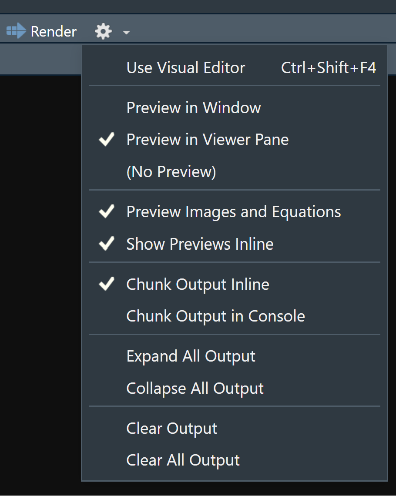
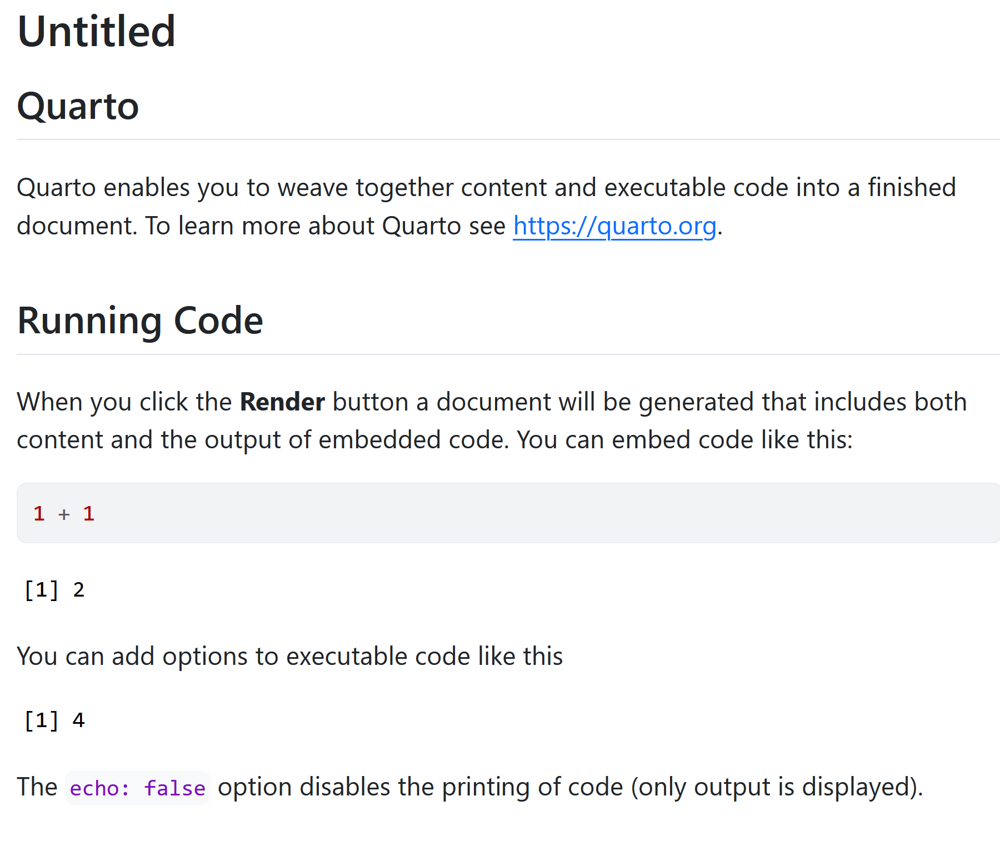
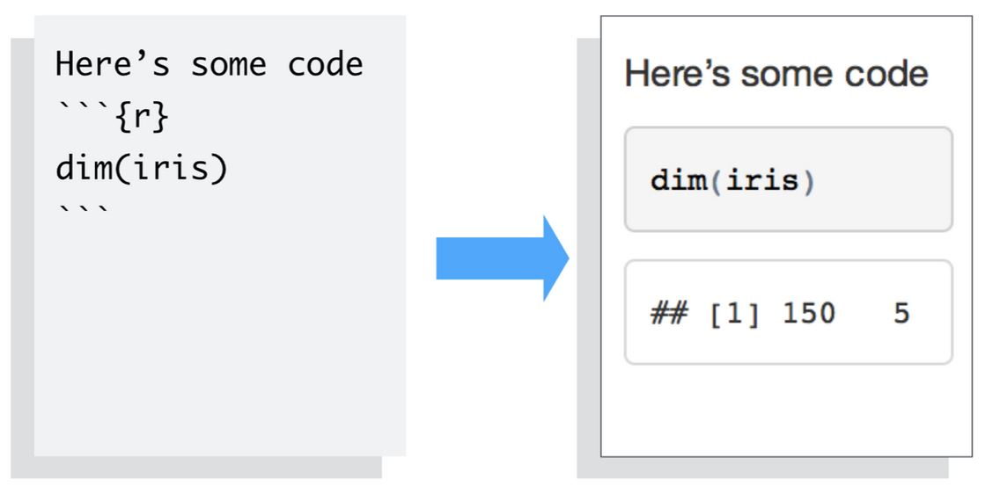

# Load Packages
#install.packages(pacman)
#install.packages(gtsummary)
#install.packages(gt)
pacman::p_load(tidyverse, here, gtsummary)
# Load Data
df <- read_rds(here("data", "nhanes_modified_df.rds"))
df <- df |>
janitor::clean_names()8 Research Communication with Quarto and R
8.1 Introduction to Quarto
Quarto provides a unified authoring framework for data science, combining your code, its results, and your prose. Quarto documents are fully reproducible and support dozens of output formats, like PDFs, Word files, presentations, and more.

Quarto files are designed to be used in three ways:
- For communicating to decision-makers, who want to focus on the conclusions, not the code behind the analysis.
- For collaborating with other data scientists (including future you!), who are interested in both your conclusions, and how you reached them (i.e. the code).
- As an environment in which to do data science, as a modern-day lab notebook where you can capture not only what you did, but also what you were thinking.
Quarto is a command line interface tool, not an R package. This means that help is, by-and-large, not available through ?. Instead, as you work through this chapter, and use Quarto in the future, you should refer to the Quarto documentation (https://quarto.org/).

Note
Quarto documents are fully reproducible and support dozens of output formats, like PDFs, Word files, slideshows, and more.
Need some help?
Download Quarto: https://quarto.org/docs/get-started/
Quarto Guide: https://quarto.org/docs/guide/
Markdown Reference Sheet: Help > Markdown Quick Reference
You’ll need the Quarto Command Line Interface but it is automatically done by RStudio for you.
Let us create one from RStudio now.
To create a new Quarto document (.qmd), select File -> New File -> Quarto Document in RStudio, then choose the file type you want to create. For now we will focus on a .html Document, which can be easily converted to other file types later.
Go ahead and give a title.
The newly created .qmd file comes with basic instructions, let us go through it now.
It contains three important types of content:
- An (optional) YAML header surrounded by
--- - Chunks of R code surrounded by
``` - Text mixed with formatting like
##headings and simple text.
YAML stands for yet another markup language or YAML ain’t markup language (a recursive acronym), which emphasizes that YAML is for data, not documents.
In any case, it holds the metadata of the document and can be really helpful.
8.1.1 How does Quarto work?
When you render a Quarto document, first knitr executes all of the code chunks and creates a new markdown (.md) document, which includes the code and its output. The markdown file generated is then processed by pandoc, which creates the finished format. The Render button encapsulates these actions and executes them in the right order for you.

8.1.2 Some Basics of the Markdown syntax
Learn more about Markdown from the Guide: https://quarto.org/docs/authoring/markdown-basics.html
When you open an .qmd, you get a notebook interface where code and output are interleaved. You can run each code chunk by clicking the Run icon (it looks like a play button at the top of the chunk), or by pressing Ctrl + Shift + Enter.
RStudio executes the code and displays the results inline with the code by default. However, you can change it to display in the console instead by clicking on the gear icon and changing the Chunk Output in Console option.


You can render the entire document with a single click of a button.
Go ahead and give it a try. RStudio might prompt you to save the document first, save it in your working directory by giving it a suitable title.
You should now see some output like this:

8.1.3 Code Chunks
The knitr package extends the basic markdown syntax to include chunks of executable R code.
When you render the report, knitr will run the code and add the results to the output file. You can have the output display just the code, just the results, or both.
To embed a chunk of R code into your report, surround the code with two lines that each contain three back ticks. After the first set of backticks, include {r}, which alerts knitr that you have included a chunk of R code. The result will look like this:

To omit the results from your final report (and not run the code) add the argument eval = FALSE inside the brackets and after r. This will place a copy of your code into the report.

To omit the code from the final report (while including the results) add the argument echo = FALSE. This is very handy for adding plots to a report, since you usually do not want to see the code that generates the plot.

Read more about R Code Chunks at https://rmarkdown.rstudio.com/articles_intro.html. You can also change this from the gear icon on the right of the code chunk
8.1.4 Inline R Code
You can also evaluate R expressions inline by enclosing the expression within a single back-tick qualified with r.
knitr will replace the inline code with its result in your final document (inline code is always replaced by its result). The result will appear as if it were part of the original text. For example, the snippet above will appear like this:


Now let us try building our own .qmd document and add our own analysis. Let us use a NHANES dataset for this purpose. So go ahead and delete everything below the YAML header.
8.1.5 Quarto Example
Download the following qmd file and render it on your own computer to see how the quarto document works.
8.2 Creating Publication-Ready Tables with gtsummary
In this section, we will explore the gtsummary package, a powerful tool for creating summary tables and presenting regression model outputs in a publication-ready format. gtsummary integrates well with Quarto and R, making it a great choice for communicating research results.
8.2.1 Basic Summary Table
First install and load necessary packages (gtsummary and gt) and the data.
To create a basic summary table for the entire dataset, use:
# Create a basic summary table for all variables
df |>
tbl_summary()| Characteristic | N = 5,6791 |
|---|---|
| unique_id | 3,839 (2,419, 5,259) |
| gender | |
| female | 2,903 (51%) |
| male | 2,776 (49%) |
| age | 45 (31, 60) |
| race | |
| White | 3,517 (62%) |
| Black | 760 (13%) |
| Mexican | 564 (9.9%) |
| Hispanic | 366 (6.4%) |
| Other | 472 (8.3%) |
| education | |
| 8th Grade | 397 (7.3%) |
| 9 - 11th Grade | 712 (13%) |
| High School | 1,131 (21%) |
| Some College | 1,695 (31%) |
| College Grad | 1,534 (28%) |
| Unknown | 210 |
| marital_status | |
| Divorced | 516 (9.4%) |
| LivePartner | 438 (8.0%) |
| Married | 2,940 (54%) |
| NeverMarried | 1,048 (19%) |
| Separated | 148 (2.7%) |
| Widowed | 384 (7.0%) |
| Unknown | 205 |
| income_hh | 50,000 (22,500, 87,500) |
| Unknown | 505 |
| poverty | 2.64 (1.24, 4.71) |
| Unknown | 440 |
| home_rooms | 6 (4, 7) |
| Unknown | 43 |
| home_own | |
| Own | 3,582 (64%) |
| Rent | 1,913 (34%) |
| Other | 145 (2.6%) |
| Unknown | 39 |
| work | |
| Looking | 231 (4.1%) |
| NotWorking | 2,120 (37%) |
| Working | 3,327 (59%) |
| Unknown | 1 |
| height | 168 (161, 176) |
| Unknown | 47 |
| weight | 79 (67, 93) |
| Unknown | 48 |
| bmi | 28 (24, 32) |
| Unknown | 54 |
| bmi_who | |
| 12.0_18.5 | 109 (1.9%) |
| 18.5_to_24.9 | 1,642 (29%) |
| 25.0_to_29.9 | 1,877 (34%) |
| 30.0_plus | 1,972 (35%) |
| Unknown | 79 |
| pulse | 72 (64, 80) |
| Unknown | 218 |
| bp_sys | 119 (109, 130) |
| Unknown | 227 |
| bp_sys1 | 120 (110, 132) |
| Unknown | 437 |
| bp_sys_post | 115 (106, 126) |
| Unknown | 227 |
| bp_dia | 70 (63, 77) |
| Unknown | 227 |
| bp_dia1 | 70 (64, 78) |
| Unknown | 437 |
| testosterone | 72 (20, 377) |
| Unknown | 2,818 |
| direct_chol | 1.29 (1.09, 1.58) |
| Unknown | 320 |
| tot_chol | 4.94 (4.27, 5.64) |
| Unknown | 320 |
| urine_vol1 | 93 (50, 165) |
| Unknown | 86 |
| urine_flow1 | 0.73 (0.42, 1.26) |
| Unknown | 385 |
| urine_vol2 | 95 (52, 171) |
| Unknown | 4,763 |
| urine_flow2 | 0.75 (0.48, 1.40) |
| Unknown | 4,764 |
| diabetes | 611 (11%) |
| Unknown | 1 |
| diabetes_age | 50 (40, 60) |
| Unknown | 5,168 |
| health_gen | |
| Excellent | 577 (11%) |
| Vgood | 1,575 (31%) |
| Good | 2,010 (40%) |
| Fair | 770 (15%) |
| Poor | 151 (3.0%) |
| Unknown | 596 |
| days_phys_hlth_bad | 0 (0, 3) |
| Unknown | 603 |
| days_ment_hlth_bad | 0 (0, 4) |
| Unknown | 601 |
| little_interest | |
| None | 3,837 (76%) |
| Several | 869 (17%) |
| Most | 343 (6.8%) |
| Unknown | 630 |
| depressed | |
| None | 3,937 (78%) |
| Several | 783 (16%) |
| Most | 331 (6.6%) |
| Unknown | 628 |
| n_pregnancies | 3 (2, 4) |
| Unknown | 3,687 |
| n_babies | 2 (2, 3) |
| Unknown | 3,833 |
| age1st_baby | 22 (19, 25) |
| Unknown | 4,222 |
| sleep_hrs_night | 7 (6, 8) |
| Unknown | 14 |
| sleep_trouble | 1,455 (26%) |
| phys_active | 2,950 (52%) |
| phys_active_days | |
| 1 | 344 (12%) |
| 2 | 515 (18%) |
| 3 | 705 (24%) |
| 4 | 381 (13%) |
| 5 | 476 (16%) |
| 6 | 151 (5.1%) |
| 7 | 367 (12%) |
| Unknown | 2,740 |
| tv_hrs_day | |
| 0_hrs | 74 (2.4%) |
| 0_to_1_hr | 389 (13%) |
| 1_hr | 501 (16%) |
| 2_hr | 759 (25%) |
| 3_hr | 565 (18%) |
| 4_hr | 363 (12%) |
| More_4_hr | 446 (14%) |
| Unknown | 2,582 |
| comp_hrs_day | |
| 0_hrs | 726 (23%) |
| 0_to_1_hr | 866 (28%) |
| 1_hr | 608 (20%) |
| 2_hr | 375 (12%) |
| 3_hr | 217 (7.0%) |
| 4_hr | 123 (4.0%) |
| More_4_hr | 184 (5.9%) |
| Unknown | 2,580 |
| tv_hrs_day_child | NA (NA, NA) |
| Unknown | 5,679 |
| alcohol12plus_yr | 3,892 (78%) |
| Unknown | 700 |
| alcohol_day | 2 (1, 3) |
| Unknown | 2,007 |
| alcohol_year | 24 (3, 104) |
| Unknown | 1,235 |
| smoke_now | 1,116 (46%) |
| Unknown | 3,256 |
| smoke100 | 2,423 (44%) |
| Unknown | 201 |
| smoke100n | |
| Non-Smoker | 3,055 (56%) |
| Smoker | 2,423 (44%) |
| Unknown | 201 |
| smoke_age | 17 (15, 19) |
| Unknown | 3,354 |
| marijuana | 2,096 (57%) |
| Unknown | 2,010 |
| age_first_marij | 16 (15, 18) |
| Unknown | 3,584 |
| regular_marij | 990 (27%) |
| Unknown | 2,010 |
| age_reg_marij | 17 (15, 19) |
| Unknown | 4,689 |
| hard_drugs | 764 (18%) |
| Unknown | 1,368 |
| sex_ever | 4,137 (96%) |
| Unknown | 1,367 |
| sex_age | 17 (15, 19) |
| Unknown | 1,546 |
| sex_num_partn_life | 5 (2, 12) |
| Unknown | 1,399 |
| sex_num_part_year | 1 (1, 1) |
| Unknown | 2,019 |
| same_sex | 312 (7.2%) |
| Unknown | 1,367 |
| sex_orientation | |
| Bisexual | 91 (2.5%) |
| Heterosexual | 3,426 (96%) |
| Homosexual | 70 (2.0%) |
| Unknown | 2,092 |
| 1 Median (Q1, Q3); n (%) | |
This function automatically identifies variable types (continuous or categorical) and provides default summary statistics.
8.2.2 Selecting Specific Variables for Summary
You can specify the variables you want to include in the summary table:
df |>
tbl_summary(
include = c(gender, age, race, height, weight)
)| Characteristic | N = 5,6791 |
|---|---|
| gender | |
| female | 2,903 (51%) |
| male | 2,776 (49%) |
| age | 45 (31, 60) |
| race | |
| White | 3,517 (62%) |
| Black | 760 (13%) |
| Mexican | 564 (9.9%) |
| Hispanic | 366 (6.4%) |
| Other | 472 (8.3%) |
| height | 168 (161, 176) |
| Unknown | 47 |
| weight | 79 (67, 93) |
| Unknown | 48 |
| 1 n (%); Median (Q1, Q3) | |
8.2.3 Customizing Summary Statistics
You can specify the type of statistic displayed for continuous and categorical variables.
For example, for all continuous variables, display the Mean (Standard Deviation) instead of the Median (\(Q_1\), \(Q_3\)), and show percentage only for all categorical variables.
df |>
drop_na(height, weight) |>
tbl_summary(
include = c(gender, age, race, height, weight),
statistic = list(all_continuous() ~ "{mean}({sd})",
all_categorical() ~ "{p}%")
)| Characteristic | N = 5,6251 |
|---|---|
| gender | |
| female | 51% |
| male | 49% |
| age | 46(18) |
| race | |
| White | 62% |
| Black | 13% |
| Mexican | 10.0% |
| Hispanic | 6.5% |
| Other | 8.3% |
| height | 169(10) |
| weight | 82(21) |
| 1 %; Mean(SD) | |
If you want to customize display for only certain variables, you can specify them individually:
df |>
drop_na(weight, height) |>
tbl_summary(
include = c(gender, age, race, height, weight),
statistic = list(
weight ~ "{mean}({sd})",
race ~ "{p}%"
)
)| Characteristic | N = 5,6251 |
|---|---|
| gender | |
| female | 2,873 (51%) |
| male | 2,752 (49%) |
| age | 45 (31, 60) |
| race | |
| White | 62% |
| Black | 13% |
| Mexican | 10.0% |
| Hispanic | 6.5% |
| Other | 8.3% |
| height | 168 (161, 176) |
| weight | 82(21) |
| 1 n (%); Median (Q1, Q3); %; Mean(SD) | |
8.2.4 Renaming Variable Labels
It’s often useful to provide more descriptive labels for your variables:
df |>
drop_na(age, race, height, weight, bp_sys) |>
tbl_summary(
include = c(age, race, height, weight, bp_sys),
label = list(
age ~ "Age",
race ~ "Race",
height ~ "Height",
weight ~ "Weight",
bp_sys ~ "Systolic Blood Pressure"
)
)| Characteristic | N = 5,4081 |
|---|---|
| Age | 45 (31, 60) |
| Race | |
| White | 3,368 (62%) |
| Black | 713 (13%) |
| Mexican | 540 (10.0%) |
| Hispanic | 345 (6.4%) |
| Other | 442 (8.2%) |
| Height | 169 (161, 176) |
| Weight | 79 (67, 93) |
| Systolic Blood Pressure | 119 (109, 129) |
| 1 Median (Q1, Q3); n (%) | |
Here, the label argument customizes how variable names appear in the table.
8.2.5 Stratified Summary Table by a Categorical Variable
To compare summary statistics across different groups, you can stratify the table by a categorical variable (e.g., diabetes status):
df |>
drop_na(age, race, height, weight, bp_sys, diabetes) |>
tbl_summary(
by = diabetes,
include = c(age, race, height, weight, bp_sys, bmi),
label = list(
age ~ "Age",
race ~ "Race",
height ~ "Height",
weight ~ "Weight",
bp_sys ~ "Systolic Blood Pressure",
bmi ~ "Body Mass Index"
)
)| Characteristic | No N = 4,8211 |
Yes N = 5861 |
|---|---|---|
| Age | 43 (30, 57) | 62 (52, 70) |
| Race | ||
| White | 3,052 (63%) | 315 (54%) |
| Black | 598 (12%) | 115 (20%) |
| Mexican | 481 (10.0%) | 59 (10%) |
| Hispanic | 304 (6.3%) | 41 (7.0%) |
| Other | 386 (8.0%) | 56 (9.6%) |
| Height | 169 (161, 176) | 167 (159, 175) |
| Weight | 78 (66, 92) | 87 (75, 105) |
| Systolic Blood Pressure | 118 (109, 128) | 128 (116, 141) |
| Body Mass Index | 27 (24, 32) | 31 (27, 37) |
| 1 Median (Q1, Q3); n (%) | ||
8.2.6 Creating a Contingency Table with p-value
In this section, we use the gtsummary package to create a contingency table for a categorical variable (bmi_who) stratified by the diabetes status. Additionally, we include a p-value to test the association between these two variables. Here is the code:
df |>
drop_na(bmi_who, diabetes) |>
tbl_summary(
by = diabetes,
include = c(bmi_who),
label = list(
bmi_who ~ "Body Mass Index (WHO Categorisation)"
)
) |>
add_p()| Characteristic | No N = 5,0021 |
Yes N = 5971 |
p-value2 |
|---|---|---|---|
| Body Mass Index (WHO Categorisation) | <0.001 | ||
| 12.0_18.5 | 106 (2.1%) | 3 (0.5%) | |
| 18.5_to_24.9 | 1,564 (31%) | 78 (13%) | |
| 25.0_to_29.9 | 1,706 (34%) | 171 (29%) | |
| 30.0_plus | 1,626 (33%) | 345 (58%) | |
| 1 n (%) | |||
| 2 Pearson’s Chi-squared test | |||
8.2.7 Creating a Regression Model Table
The gtsummary package also supports regression models. Let’s fit a simple linear regression model and present it in a publication-ready format:
# Fit a simple linear regression model
model <- lm(bp_sys ~ age + bmi_who, data = df)
# Create a regression summary table
model |>
tbl_regression(
label = list(
age ~ "Age",
bmi_who ~ "Body Mass Index (WHO Categories)"
)
)| Characteristic | Beta | 95% CI1 | p-value |
|---|---|---|---|
| Age | 0.41 | 0.39, 0.44 | <0.001 |
| Body Mass Index (WHO Categories) | |||
| 12.0_18.5 | — | — | |
| 18.5_to_24.9 | 3.2 | 0.11, 6.2 | 0.042 |
| 25.0_to_29.9 | 4.4 | 1.3, 7.4 | 0.005 |
| 30.0_plus | 6.2 | 3.2, 9.3 | <0.001 |
| 1 CI = Confidence Interval | |||
This function provides a clean summary of the regression coefficients, making it easy to interpret the model results.
8.3 Conclusion
Quarto offers a powerful tool for reproducible research by seamlessly integrating code, analysis, and narrative into a single document. It is ideal for a variety of use cases, ranging from exploratory data analysis to professional reports and journal articles, supporting multiple output formats such as HTML, PDF, Word, and more, enhancing accessibility and communication.
For data scientists and researchers, Quarto’s clean syntax and markdown features make writing and collaboration straightforward, while the interactive execution of R code allows for easy iteration and refinement of analyses. RStudio’s integration with Quarto streamlines the workflow, making it intuitive for both beginners and experienced users.
Quarto also offers enhanced flexibility and customization through its YAML configuration and markdown formatting, allowing users to tailor documents to meet specific reporting needs. Specialized outputs such as regression tables can be seamlessly integrated using packages like gtsummary, and gt, producing polished, publication-ready tables. Additionally, Quarto ensures all code and outputs are embedded within the document, making it easy to share and reproduce analyses, fostering transparency and credibility.
As a modern-day lab notebook, Quarto enables researchers to record not only results but also the thought process behind each analysis. Ultimately, Quarto empowers researchers to present their findings in a clear and effective way while maintaining reproducibility and flexibility throughout their workflow.